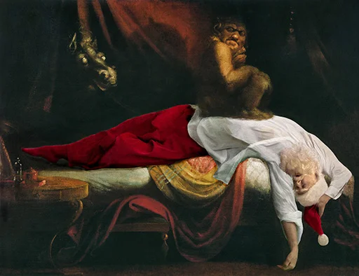

Quiz de révision : entraîne-toi à réutiliser tes outils (champ lexical, registres, procédés, analyse d'image) sur des exemples nouveaux, avant le contrôle.
bonnes réponses sur
📖 Texte C (extrait inédit) — à garder sous les yeux pour les deux questions
Le gardien du phare recula d'un pas lorsque la forme surgit des rochers. Sa peau, craquelée comme une écorce morte, luisait d'une phosphorescence malsaine ; ses mains, trop longues, tremblaient de froid. Et pourtant, dans ce visage difforme, deux yeux d'un bleu très doux le regardaient, suppliants, comme ceux d'un enfant perdu. « N'ayez pas peur », murmura la créature d'une voix brisée, « je ne veux que de la lumière, un instant, avant de retourner à la mer. »
Question ouverte 1 / 2 — Analyse d'image
Observe l'image « Le Cauchemar » de Füssli (1781) et décris les émotions qui s'en dégagent, en t'appuyant sur la méthode.

🔎 Aide — la méthode en 3 points
Les couleurs : chaudes (agitation, danger) ou froides (tristesse, angoisse, calme) ?
Les lignes/formes : courbes (rassurant) ou brisées/anguleuses (tension) ?
La composition : qu'est-ce qui est mis en valeur, le personnage est-il isolé ou écrasé par le décor ?
Phrases-outils : « Les couleurs [froides/vives] traduisent... » · « Les lignes [brisées/courbes] créent une impression de... » · « Ce qui est mis en valeur, c'est... »
Question ouverte 2 / 2 — Synthèse de corpus
Le Texte C (le gardien du phare) et l'image que tu as observée ont-ils un point commun ? Justifie en une phrase par document.
🔎 Aide — la méthode en 2 étapes
Trouve une émotion commune aux deux documents (ou un contraste intéressant).
Explique comment chaque document la construit : par des mots (champ lexical, procédés) pour le texte, par des couleurs/formes pour l'image.
Phrases-outils : « Dans les deux documents, on retrouve... » · « Le texte l'exprime par..., tandis que l'image le montre par... » · « Ces deux œuvres cherchent à faire ressentir... »
Bien joué 🌙
Relis tes réponses ouvertes et compare-les aux exemples avant le contrôle.